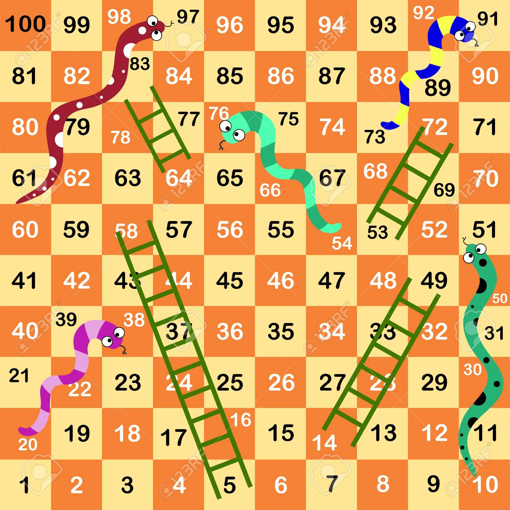

Intrucciones: Este juego de Serpientes y escaleras es para dos personas Por turnos, deberán presionar el boton que les corresponda para obtener un número del dado y avanzar las casillas. Debajo de los botones se irá narrando el juego, el número que cayó y la casilla esctual del jugador. ¡Que se diviertan!
